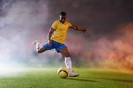

The top players in sporting are elite, inhumane athletes. This is because professional sporting is played at a very competitive level, and these players have to be top-class players, in order to earn their place in top teams, or major competitions like the Olympics. Some sports do, however, require different skillsets to play effectively, and so the top athletes from those sports, may be different, physically or mentally. This website is a list of top players from different sports, some statistics about them, and how they compare to each other.
